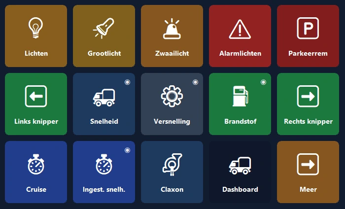
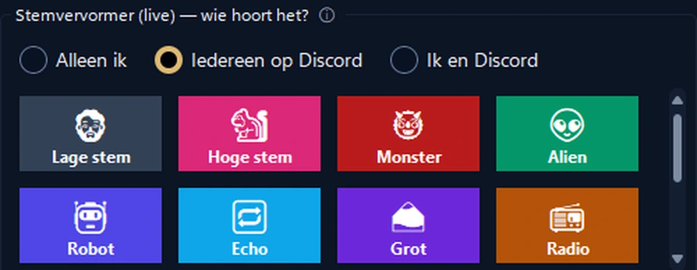
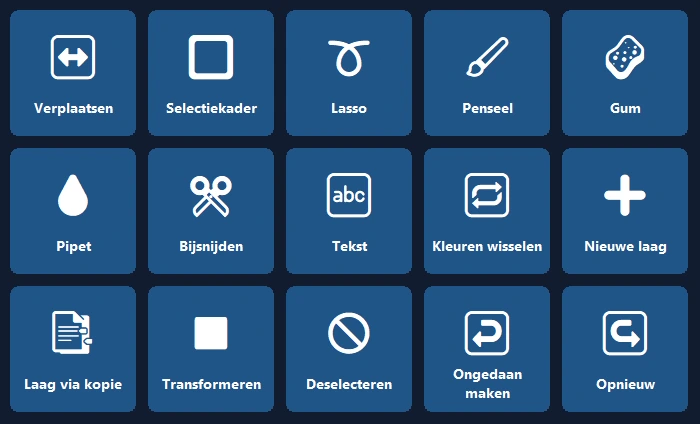
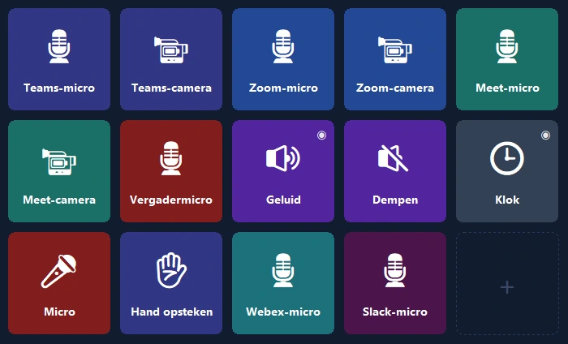

Je telefoon, het bedieningspaneel van je pc.
Sneltoetsen met één tik, OBS, Discord, Spotify en gamepanelen. Via USB, wifi of mobiele data, met end-to-end-versleuteling.
Het dashboard van je truck, nu op je telefoon.
Snelheid, toerental, brandstof en realistische waarschuwingslampjes in realtime; de truckbediening met één tik.
- 🚦Een echt dashboardSnelheid, limiet, toerental, brandstof en aankomsttijd; de lampjes gaan aan zoals in de game.
- 🕹Bediening met één tikKoplampen, parkeerrem, cruisecontrol; kijk met één tik naar links of rechts.
- 📳Geen instellingenStart je de game, dan stelt de telefoon een kant-en-klaar paneel voor en schakelt er daarna elke keer zelf naar over.

Beheer je stream met één hand.
Je telefoon in plaats van een duur apparaat: OBS, geluidseffecten, Discord en muziek op één scherm.
- 🎬OBS-bedieningScènes, opnemen en uitzenden, timers direct op de knop.
- 📳Geluidspaneel en muziekSpeel kant-en-klare geluiden af, bedien Spotify en het volume per app op één scherm.
- 🎙StemstudioNatuurlijke vrouwen-, mannen- en kinderstemmen, of je eigen stem; zet je Discord-microfoon met één tik uit.


Open het programma, het paneel staat al klaar.
Panelen gebaseerd op de officiële sneltoetsen van Photoshop, Premiere Pro, After Effects, Illustrator, DaVinci Resolve, Blender, Figma en VS Code.
- ✨Geen instellingenKomt het programma op de voorgrond, dan stelt de telefoon het paneel voor en schakelt er daarna zelf naar over (Pro).
- ⌨De juiste sneltoetsenGereedschap, lagen, ongedaan maken, markeringen: met de standaardsneltoetsen van elk programma.
Je microfoon met één tik.
Zet je microfoon uit in Teams, Zoom, Meet, Webex en Slack zonder sneltoetsen in te stellen, ook als het vergadervenster op de achtergrond staat.
- 🎙Alleen dat programmaWindows dempt de microfoon alleen voor het vergaderprogramma; andere programma's blijven onaangeroerd.
- 🔴Status altijd zichtbaarZolang de microfoon uit staat, brandt het lampje van de knop rood; ook in de gratis versie.

Het handigste scherm op je bureau.
Begin in een minuut met een kant-en-klare indeling; de echte logo's van je programma's verschijnen vanzelf.
Tweede scherm
Bekijk het pc-scherm op je telefoon en gebruik hem als touchmuis en toetsenbord.
Volume per app
Het volume van elk programma apart; koptelefoon ↔ speakers met één tik.
Slimme pagina's
Pagina's volgen het actieve programma; timers, mappen en acties in meerdere stappen.
Overal verbinden
Hetzelfde wifi is niet nodig: werkt ook via mobiele data en met meerdere pc's.
Versleutelde cloudback-up
Je indeling wordt versleuteld opgeslagen zonder account en komt terug op een nieuwe pc.
Privacy
Geen account, geen advertenties, geen tracking. Je knoppen blijven op je apparaten.
Klaar in een minuut.
Installeer het programma
Download PanelDeck gratis voor Windows en open het.
Scan de QR-code
De telefoonapp maakt binnen enkele seconden verbinding met de QR-code.
Tikken maar
Kies een kant-en-klare indeling of maak je eigen knoppen.
Eén keer betalen, altijd gebruiken.
Geen abonnement, geen advertenties, geen tracking. Alle updates inbegrepen. Google Play toont de lokale prijs voor jouw land.
Gratis
- Verbinding via USB, wifi en mobiele data
- 6 knoppen op de eerste pagina
- Sneltoetsen, media, programma's starten, Discord, timer
PanelDeck Pro
Introductieprijs; daarna $ 6,99. 7 dagen gratis proberen.
- 6 tabbladen, onbeperkt mappen en knoppen
- Tweede scherm, volumeschuiven, live-informatie
- Truckpaneel, Stemstudio, panelen bij het openen van programma's
- Versleutelde cloudback-up
Goed om te weten
Heb ik een account nodig?
Nee. PanelDeck vraagt geen account; je knoppen blijven op je apparaten.
Werkt het buiten de deur?
Ja. Zonder hetzelfde wifi verbindt de telefoon via mobiele data met end-to-end-versleuteling.
Met welke games werkt het?
Euro Truck Simulator 2 en American Truck Simulator worden volledig ondersteund. Live-panelen voor race- en vluchtsimulators zijn in bèta.
Is er een iPhone-versie?
Voorlopig alleen Android. Een versie voor iPhone en iPad staat in de planning.
Windows zegt 'Windows heeft uw pc beschermd', wat nu?
Klik op 'Meer informatie' → 'Toch uitvoeren'. Details staan in de installatiehandleiding.
Zet vandaag je paneel klaar.
Begin gratis en stap over op Pro wanneer je wilt.
⬇ Gratis downloaden voor Windows